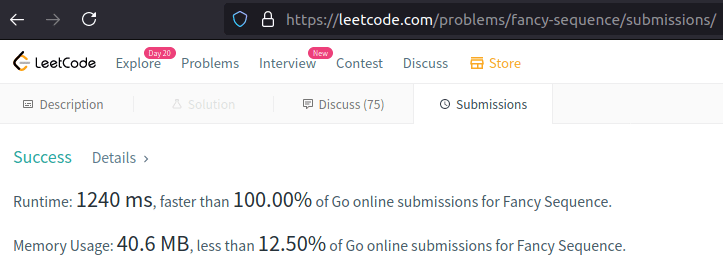

Wyuczona bezradność
Co to jest? Czy dorośli mogą świadomie zrezygnować ze swoich możliwości z tego powodu, że tak im będzie lepiej w życiu? Tutaj trzeba koniecznie ustalić dokładnie, jakie są te oczekiwania. Co to w ogóle oznacza "lepiej w życiu"? Czy może na przykład hikikomori to właściwie typowa wyuczona bezradność? Niestety, jak to odbywa się retoryczne w dyskursie, nie można stanowczo odpowiadać na te pytania. Bo to są pytania jak najbardziej filozoficzne. Odpowiedz na te pytania całkowicie zależy od tego, kto pyta, kto jest świadkiem procesu komunikatywnego. Hikikomori ("wycofany") jako ofiara tego procesu może nie dawać sobie sprawy co się dzieje; jak świat toczy się wokół niego. A może to przykład optymalizacji życia społecznego, kiedy członkowie społeczności podświadomie rezygnują z socjalnej aktywności, w celu oszczędzania energii społecznej czy psychicznej? Mam na myśli optymalizację bardziej w stylu psychofizycznym, kiedy energia takiego rodzaju zostaje uwolniona dla przetrwania jakiegoś kryzysu. Na przykład kryzysu przeludnienia.
Der süße Brei
Es war einmal ein armes frommes Mädchen, das lebte mit seiner Mutter allein, und sie hatten nichts mehr zu essen. Da gieng das Kind hinaus in den Wald, und begegnete ihm da eine alte Frau, die wußte seinen Jammer schon und schenkte ihm ein Töpfchen, zu dem sollt es sagen „Töpfchen, koche,“ so kochte es guten süßen Hirsenbrei, und wenn es sagte „Töpfchen, steh,“ so hörte es wieder auf zu kochen. Das Mädchen brachte den Topf seiner Mutter heim, und nun waren sie ihrer Armuth und ihres Hungers ledig und aßen süßen Brei so oft sie wollten. Auf eine Zeit war das Mädchen ausgegangen, da sprach die Mutter „Töpfchen, koche,“ da kocht es, und sie ißt sich satt; nun will sie daß das Töpfchen wieder aufhören soll, aber sie weiß das Wort nicht. Also kocht es fort, und der Brei steigt über den Rand hinaus und kocht immer zu, die Küche und das ganze Haus voll, und das zweite Haus und dann die Straße, als wollts die ganze Welt satt machen, und ist die größte Noth, und kein Mensch weiß sich da zu helfen. Endlich, wie nur noch ein einziges Haus übrig ist, da kommt das Kind heim, und spricht nur „Töpfchen, steh,“ da steht es und hört auf zu kochen; und wer wieder in die Stadt wollte, der mußte sich durchessen.
Meine Fragen:
- Warum hat das Mädchen ihr Zauberwort nicht mit ihrer Mutter geteilt?
- Warum hat das Mädchen ihren süßen Brei nicht zuerst mit allen geteilt?
- Warum hat die alte Frau nur mit dem Mädchen geteilt (nicht mit allen)?
Longest Substring Without Repeating Characters
/*
#----------------------------------------------------------------------------------------------#
# #
# version 0.0.1 #
* https://leetcode.com/problems/longest-substring-without-repeating-characters/submissions/ #
# #
# Aleksiej Ostrowski, 2020 #
# #
# https://aleksiej.com #
# #
#----------------------------------------------------------------------------------------------#
*/
#include <string>
#include <iostream>
int max(const int a, const int b) {
if (a > b) return a; else return b;
}
class Solution {
public:
int lengthOfLongestSubstring(std::string s) {
auto len_s = s.length();
if (len_s <= 1) return len_s;
std::string t;
int max_len = -1;
int i = 0;
for (;;) {
auto found = t.find(s[i]);
if (found != -1) t = t.substr(found + 1);
t += s[i];
max_len = max(max_len, t.length());
std::cout << "i = " << i << " s[" << i << "] = " << s[i] << " max_len = " << max_len << " string = " << t << std::endl;
if (++i >= len_s) break;
}
return max_len;
}
};
int main() {
// std::string s = "aabac"; // 3
// std::string s = "pwwkew"; // 3
// std::string s = "bbbbb"; // 1
// std::string s = " "; // 1
std::string s = "aab"; // 2
std::cout << "input " << s << std::endl;
auto S = Solution();
std::cout << S.lengthOfLongestSubstring(s) << std::endl;
return 0;
}
How to use the program Data Entry
This video demonstrates the basic capabilities of the Data Entry program.
- Creating interval numeric and other variables.
- The verifiable entry of variable values.
- Exporting to SPSS. Save the template with a password.
Fancy Sequence

/*
#-------------------------------------------------------------#
# #
# version 0.0.2 #
# https://leetcode.com/problems/fancy-sequence/ #
# #
# Aleksiej Ostrowski, 2021 #
# #
# https://aleksiej.com #
# #
#-------------------------------------------------------------#
*/
package main
import (
"fmt"
"os"
)
const crt = 84467440737095516 // max(uint64) = 8446744073709551615
const md = 1000000007
type Oper struct {
o int8
v int8
h int32
}
type Fancy struct {
arr []int8
opr []Oper
cas map[int]int
}
func Constructor() Fancy {
return Fancy{}
}
func (this *Fancy) Append(val int) {
this.arr = append(this.arr, int8(val))
}
func printList(l Fancy) {
for _, v := range l.arr {
fmt.Print(v, " ")
}
fmt.Println()
}
func (this *Fancy) AddAll(inc int) {
this.opr = append(this.opr, Oper{-2, int8(inc), int32(len(this.arr))})
this.cas = make(map[int]int)
/*
for k := range this.cas {
delete(this.cas, k)
}
*/
}
func (this *Fancy) MultAll(m int) {
this.opr = append(this.opr, Oper{-1, int8(m), int32(len(this.arr))})
this.cas = make(map[int]int)
/*
for k := range this.cas {
delete(this.cas, k)
}
*/
}
func (this *Fancy) GetIndex(idx int) int {
if idx < 0 || idx >= len(this.arr) {
return -1
}
if val, ok := this.cas[idx]; ok {
return val
}
var vv uint64
vv = uint64(this.arr[idx])
for _, v := range this.opr {
if idx >= int(v.h) {
continue
}
switch os := v.o; os {
case -2:
vv += uint64(v.v)
case -1:
vv *= uint64(v.v)
}
if vv > crt {
vv = vv % md
}
}
if vv > md {
vv = vv % md
}
if this.cas == nil {
this.cas = make(map[int]int)
}
this.cas[idx] = int(vv)
return int(vv)
}
func main () {
obj := Constructor()
obj.Append(2)
obj.Append(4)
obj.Append(1)
obj.Append(6)
printList(obj)
obj.AddAll(9)
obj.AddAll(1)
obj.MultAll(2)
fmt.Println(obj.GetIndex(0))
os.Exit(1)
obj.MultAll(9)
obj.AddAll(2)
fmt.Println(obj.GetIndex(3))
obj.Append(7)
obj.Append(5)
obj.Append(3)
obj.AddAll(4)
obj.MultAll(5)
obj.AddAll(4)
fmt.Println(obj.GetIndex(1))
}